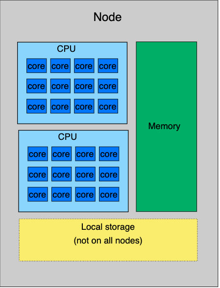
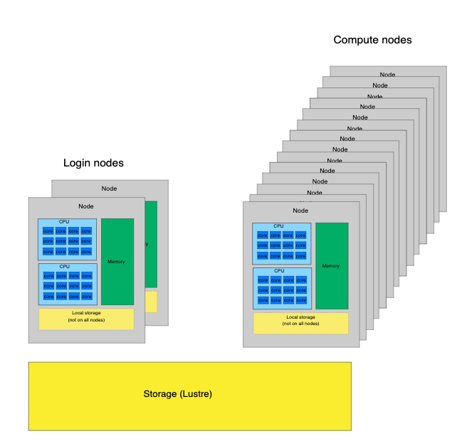
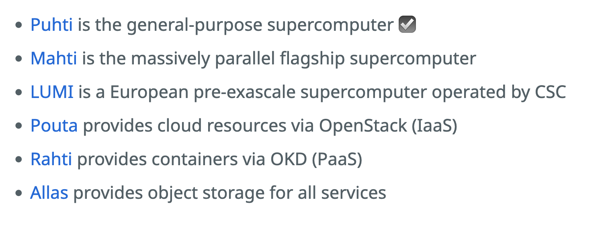
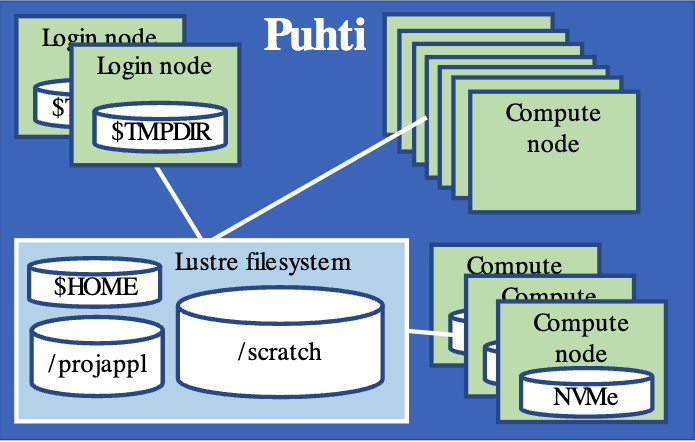
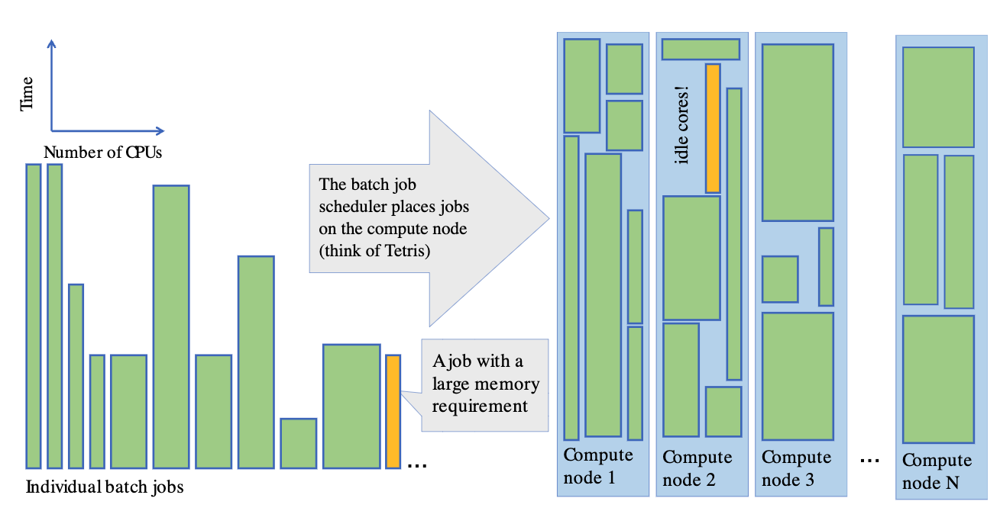

Parallel R / HPC
Parallel R and running R on an HPC cluster
HPC = high performance computing
Short introduction to supercomputers: Puhti
Images from https://csc-training.github.io/csc-env-eff/
One node:

Supercomputer / high performance computing cluster

Overview of CSC’s computing services


- On Puhti, one node = 40 cores
SLURM job scheduler

R environment on Puhti
module r-env
module load r-envloads the latest R version available on Puhti: https://docs.csc.fi/apps/r-env/#available)currently: R v. 4.4.0
to load a specific R version, use
module load r-env/440ormodule load r-env/432etc.
runs in a container (self-contained environment - limitations with using other modules on Puhti)
- RStudio Terminal panel: inside the container
packages of each R version date-locked to a specific date
aim: to avoid conflicts between versions and increase reproducibility
package versions within an R version don’t change - only updated in a new R version
avoid updating packages when installing new ones
over 1400 packages installed
a package missing?
install yourself for your project in projappl (see https://docs.csc.fi/apps/r-env/#r-package-installations
ask for a general installation for all users (email servicedesk@csc.fi)
Interactive R on Puhti
RStudio (Puhti web interface or ssh tunnelling)
console R: computer node shell / sinteractive on terminal (demonstration, no exercise this time)
module load r-env
start-r
uses fast local storage (NVMe) for storing temporary files
limitations on resources - meant for light or medium heavy interactive work
Non-interactive R on Puhti: batch jobs
Basic template for R batch job script:
#!/bin/bash -l
#SBATCH --job-name=my_batchjobtest # give your job a name here
#SBATCH --account=project_2011190 # project number of the course project
#SBATCH --output=output_%j.txt
#SBATCH --error=errors_%j.txt
#SBATCH --partition=small
#SBATCH --time=00:30:00 # h:min:sek, this reserves 30 minutes
#SBATCH --ntasks=1
#SBATCH --nodes=1
#SBATCH --cpus-per-task=1
#SBATCH --mem-per-cpu=1000
# Load r-env
module load r-env
# Clean up .Renviron file in home directory
if test -f ~/.Renviron; then
sed -i '/TMPDIR/d' ~/.Renviron
fi
# Specify a temp folder path
echo "TMPDIR=/scratch/project_2011190/personal/myfolder" >> ~/.Renviron
# Run the R script
srun apptainer_wrapper exec Rscript --no-save myscript.RBatch jobs on Puhti are submitted on the login node
login node shell in the Puhti web interface
ssh on a terminal
sbatch my_batch_job.sh
To view the status of the job:
squeue -u $USER
# or
squeue --meTo cancel a submitted job (job is shown on the terminal when you submit the job):
scancel <job_id>When the job has finished, check the resources it used:
seff <job_id>The batch job script above defined error file errors_<jobid>.txt and output file output_<jobid>.txt. By default, they go to the same folder where you submit the job.
Future: versatile framework for parallel R
Package future + a set of related packages: furrr, future_apply, etc
- see more here: https://www.futureverse.org/packages-overview.html
Often allows changing sequential code to parallel without large modifications
Different strategies:
sequential
multisession
- launches a set of background sessions
multicore
forking
faster than multisession when supported (not in Windows, not in RStudio)
cluster
- used with multiple nodes
Strategy is defined with plan(), for example plan(multisession
- multisession and multicore use
parallelly::availableCores()to determine the number of processes
Tips for parallel R and R jobs on a supercomputer
by default, R uses one core / thread
having a lot of cores available doesn’t guarantee that your R script uses them
check that adding cores really speeds up the job
but keep in mind the costs of parallelization - a very small example might not show the effect yet
how can your analysis be parallelized?
can the data be divided into chunks that can be run in parallel?
which steps could be run in parallel?
start small
- when setting up a new R script and/or analysing large datasets, run a small example first to make sure the script works before running larger jobs or full data sets
check what your package can do - is it able to use multiple cores?
manual, web pages, publications
arguments - cores, threads?
check package code
when in doubt, test performance - does adding more cores speed up the job?
use non-interactive batch jobs for larger jobs
RStudio works best on light or medium-heavy jobs
interactive partition: maximum 8 cores, 76 GB of memory
no waiting at the screen: submit a job and get email notification when it is ready
running several jobs at once (interactive jobs only 1-2 at a time)
Tips for very large data sets
specific packages and data formats can be useful
often these packages rely heavily on C/C++
readr::read_csv() in tidyverse is faster than read.csv()
-
data.table
alternative approach to tidyverse, better with big data
different syntax (SQL-like)
fread() instead of read.csv() / read_csv()
fst: another option for reading and writing csv files
convert your data into a binary file format: Parquet
arrow package: reading and writing Parquet/Arrow/CSV files, processing and analyzing larger-than-memory datasets
plus tips covered earlier:
vectorization: ‘R-like’ scripting, solves many problems
do as little as possible (for example
apply()on a data frame first turns it into a matrix, butrowSums(),colSums(),rowMeans(), andcolMeans()are vectorized and don’t do such a conversionavoid unnecessary storage or duplication of data/objects
use
rm()in scripts to remove large unneeded objectswatch out for growing objects
forloop +c(),append(),cbind(),rbind(), orpaste()
copy-on-modify vs. modifying in place
only one name bound to object -> modified in place, no copy created
‘primitive’ functions from the
basepackage often modify in place (see more here)
modify column -> only that column is copied BUT modify row -> all columns copied
use list instead of data frame
Questions on using R on Puhti later on?
servicedesk@csc.fi
weekly research support session on Zoom: https://csc.fi/en/training-calendar/csc-research-support-coffee-every-wednesday-at-1400-finnish-time-2-2/
creating your own project for using R on Puhti: https://docs.csc.fi/accounts/how-to-create-new-project/